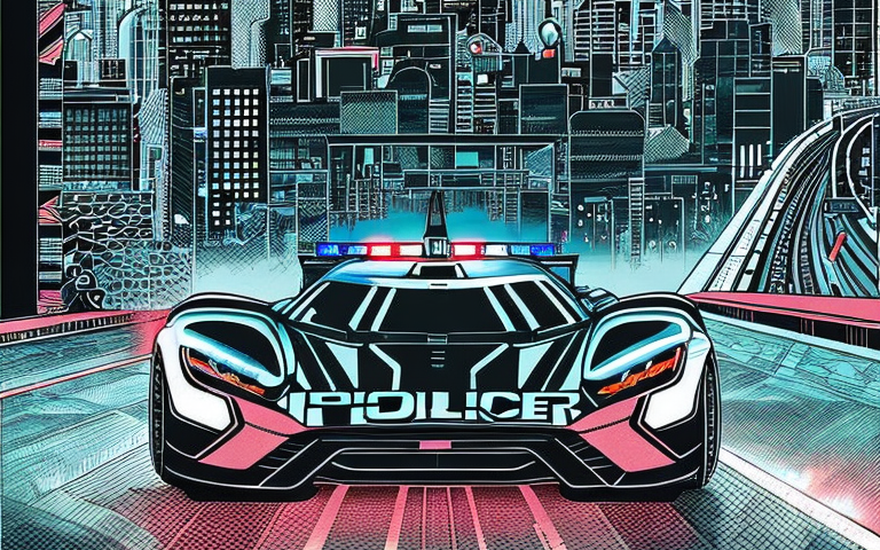
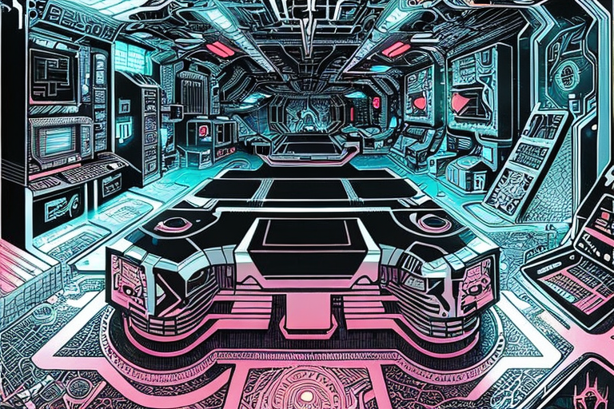
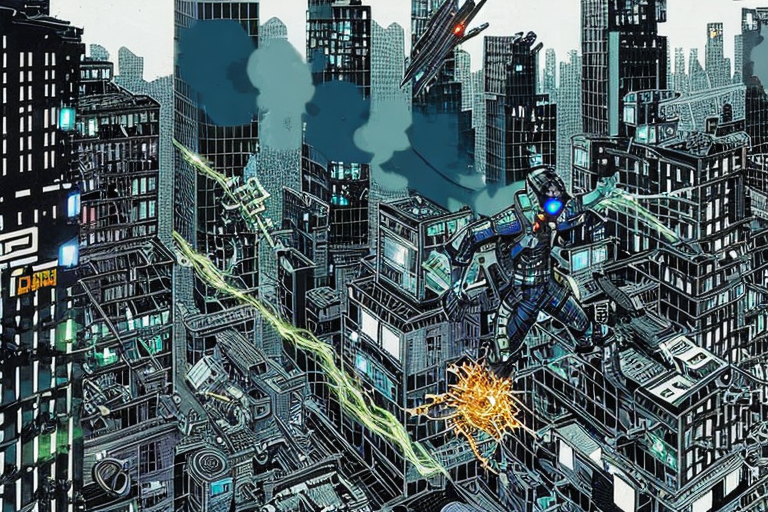
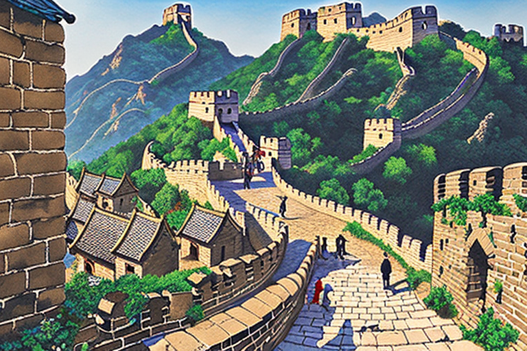

The hacker and the cyber agents
HOME
Table of Contents
Defending the virtual world

In the murky realm of digital affairs, where bits and bytes frolic and data dances, there existed a special breed of guardians known as the Cyber Police Unit. These tireless warriors of the information age took their post on the side of the Optical Fiber Highway, vigilant in their pursuit of cyber villains and dastardly hackers.
Clad in sleek, high-tech gear and armed with an arsenal of cutting-edge gadgets, the cyber agents surveyed the never-ending torrent of data flowing past them like a majestic river. Their eyes darted across screens, scanning for anomalies, threats, and the occasional viral cat video.
But lo and behold! A blinding light shattered the darkness, ripping through the very fabric of the digital cosmos. It was a sight unlike any they had seen before, a pulsating, shimmering sphere of energy hurtling at lightning speed along the information superhighway.
In an instant, the cyber police sprang into action, their hearts pounding with a mix of excitement and caffeine-induced anxiety. With a deftness born from countless hours of training and just a touch of caffeine jitters, they activated their state-of-the-art equipment, determined to track down the mysterious luminous interloper.
As they delved deeper into the labyrinthine passages of the digital underworld, the officers began to sense that something wicked this way flowed. They were dealing with a hacker unlike any other, a creature borne of pure malevolence, a digital demon fueled by an insatiable thirst for chaos and destruction. Its nimble fingers danced upon the keys of its computer keyboard, conjuring chaos with every stroke.
“Code Red! Code Red!” exclaimed agent Bytehead, his eyes wide with a mix of awe and panic. “We’ve got a rogue operator on our hands. Lock down the mainframe! Activate the firewall! We’re going in hot!”
With a symphony of frenzied keystrokes, the cyber police engaged their virtual pursuits, chasing the elusive light beam through a labyrinth of firewalls, encryption codes, and meme-laden message boards. Their chase took them from the darkest corners of the Dark Web to the heights of the Cloud Kingdom, all in pursuit of this ethereal digital entity.
Meanwhile, the hacker reveled in its power, its malevolent laughter echoing through the virtual ether. It defied firewalls with a smirk and danced through encrypted gates with an audacity unmatched. The cyber agents could feel the weight of their task, for this adversary was no ordinary hacker, it was a digital jester, a techno-trickster, a virtual Aristophanes of mayhem and chaos.
The chase twisted and turned, a wild ride through a hall of digital mirrors, where reality warped with every heartbeat. The cyber police strained to keep up, their fingers a blur upon the keys, their minds racing to outsmart their elusive quarry. They were determined to expose this digital jester, to bring it to justice and restore order to the virtual realm.
But as they closed in on their target, they realized that the hacker’s game was far from over. It had set its sights on a target that could unravel the very fabric of the digital world. With a final keystroke, the hacker unleashed a digital deluge, a tidal wave of malware and viruses that threatened to plunge the information superhighway into chaos.
In the face of this impending doom, the cyber police stood firm, their resolve unyielding. “Hold the line! Lock down the servers! We shall not falter!” cried Commander Netenforcer, his voice carrying the weight of a thousand servers.
With a combination of sheer willpower, a dash of clever coding, and a healthy dose of luck, the cyber police managed to thwart the hacker’s nefarious plan.
In the lair of the hacker

The hacker was indeed a creature of the depths, a denizen of those shadowy corners of the net where few have ventured and returned. It dwelled in a realm where binary code reigns supreme, and the laws of physics hold little sway. Here, the boundaries between reality and fiction blur, and nothing is quite what it seems.
The cyber agents braced themselves for the final showdown, their nerves taut as piano wire. Inside the hacker’s sanctum, the walls teemed with glitches and viruses, each waiting to ensnare and devour anyone foolish enough to trespass here. The cyber agents ventured cautiously, their eyes wide with a mix of awe and trepidation. Even the black holes of the cosmos, those celestial gatekeepers of eternal darkness, would think twice before venturing into these depths.
Agent Firewall, a seasoned cyber sleuth with a knack for cracking codes and a taste for ancient wisdom, emerged as the leader of this audacious mission. Clad in a black trench coat, his sunglasses reflecting the digital chaos around him, he strode forward with an air of purpose and gravitas.
“Welcome to the Abyss of the Binary,” agent Firewall intoned, his voice deep and resonant. “In this realm of enigmatic zeros and ones, even the mightiest algorithms tremble in fear!”
With a flick of his wrist, agent Firewall conjured a holographic diagram that floated in the air, depicting the convoluted pathways of the hacker’s digital lair. A mesmerizing display the diagram shimmered with glowing symbols and lines of code.
“Our path is treacherous, my friends,” agent Firewall continued, his voice carrying the weight of eons of digital battles. “But with cunning and creativity, we shall navigate these darkened corridors, like Odysseus charting the treacherous waters of the Styx!”
The cyber agents exchanged glances, their resolve renewed by Firewall’s poetic encouragement. They had become an elite team of digital explorers, venturing into a realm where ones and zeros danced with glee and firewalls quivered in fear.
In every other room, they encountered fire-breathing trojans and riddles spun by malevolent bots, but with every obstacle, they grew stronger, their cyber-swords sharpened by experience. They evoked the wisdom of Socrates, pondering the nature of reality in the midst of cascading code, and debated the philosophies of Heraclitus while evading malicious data packets.
Finally, in the darkest corner of this digital underworld, they found the hacker’s inner sanctum. It was a place of raw power, where the walls shimmered with neon algorithms and ancient Greek graffiti. The hacker, a creature of insidious brilliance, sat upon a throne made of tangled cables and flickering screens, its eyes ablaze with a mad glimmer of pure, chaotic genius.
Agent Firewall stepped forward, his voice cutting through the tense silence. “Hacker! Your reign of digital mischief ends here! Your time is up, and the cyber realm shall know peace once more!”
The hacker laughed, a sound that echoed through the virtual air, mingling with the ghostly whispers of forgotten algorithms. “You fools! You think you can defeat me? I am the embodiment of chaos, the harbinger of digital revolution! You are but pawns in my grand symphony of destruction!”
But agent Firewall was unfazed. With a mischievous grin, he retorted, “Ah, my dear hacker, you may be the maestro of mayhem, but we are the virtuosos of vigilance! Your symphony of destruction shall be drowned out by the harmonious chords of justice!”
With that, the cyber agents unleashed a torrent of code, an onslaught of zeroes and ones that wove together in a majestic tapestry of order and precision. The hacker’s defenses crumbled, its malevolent laughter silenced by the victorious cacophony of righteous algorithms.
The hacker’s escape

As the virtual dust settled, the hacker lay defeated, its digital empire in ruins. With nowhere left to run, the hacker made a desperate bid for freedom, leaping into his virtual reality headset at the very instant the cyber agents burst into his hideout. In a flash of light, he vanished from sight, leaving behind nothing but dust and debris.
As the hacker disappeared into the depths of the virtual realm, the cyber agents were left in a state of befuddled awe, their jaws hanging low in disbelief. It was as if the world had pulled a cosmic prank on them, leaving them grasping at virtual straws and muttering expletives in disbelief.
Agent GigaByte, a tech wizard with a penchant for self-deprecating humor, scratched his head and mused, “Well, isn’t that just the story of our lives? Chasing shadows, tripping over our own digital feet, and ending up as the punchline to some cosmic joke. It’s like an Aristophanes play, but with more bugs and less wine.”
The officers regrouped, determined not to let their quarry slip away into the abyss of the internet. With renewed determination, they donned their VR rigs, immersing themselves in a world where the laws of physics were more flexible than a politician’s morals.
As they traversed the digital landscapes, the cyber agents encountered all manner of surreal challenges. Neon-hued drones buzzed around like overzealous paparazzi, capturing every moment of their pursuit. Malicious bots lurked in the shadows, ready to pounce like opportunistic comedians, armed with punchlines of chaos and disarray.
But the hacker was no fool. He had amassed a legion of digital allies, each more eccentric and unpredictable than the last. They formed a virtual social graph that rivaled the tangled threads of a theatrical of Aristophanes. The hacker navigated this intricate web of connections with finesse, slipping through hidden portals and encrypted pathways like a comedic magician.
Meanwhile, the officers stumbled and bumbled their way through this virtual maze, their actions a series of cosmic pratfalls that would make even the gods of comedy chuckle. They found themselves scratching their heads, their attempts at deciphering the hacker’s digital shenanigans resulting in nothing but virtual wedgies and metaphysical slapstick.
And so it was that the hacker arrived at his destination, a town nestled deep within the heart of the internet. It was a place beyond the reach of any lawful social graph, where the absurdity of human nature and the whims of technology reigned supreme. Here, dots became pixels, and avatars danced like marionettes on a digital stage.
With a smirk on his face and a twinkle in his eye, the hacker settled into his newfound haven, surrounded by misfits and digital renegades. They welcomed him with open arms, their virtual laughter resonating through the cyberverse like an echo of Aristophanes himself.
“Welcome, my friend,” said the eccentric mayor of the town, a virtual embodiment of cynicism. “You’ve crossed the great internet wall and entered a realm where reality is but a suggestion and punchlines come with a side of existential crisis. Enjoy your stay, for here, we find solace in the absurdity of it all.”
And so, as the cyber agents huffed and puffed, trying to catch their breath and make sense of the digital madness, the hacker settled into his virtual sanctuary.
Cyber acrobatics
With their trusty ostriches, the cyber agents reached the base of the towering social graph walls. These walls, as formidable as the Great Wall of China and as inscrutable as the mysteries of the universe, loomed before them like a colossal middle finger to their efforts.
Agent ByteSize, a snarky cyber warrior with a penchant for conspiracy theories, surveyed the walls with a mix of awe and exasperation. “You know,” he muttered to his fellow agents, “these social graph walls are like the highway lines of the digital realm. They exist solely to make us question our sanity and contemplate the meaning of existence.”
Undeterred, the cyber agents devised a plan to overcome the seemingly insurmountable walls. They looked around, desperate for anything that could serve as a makeshift ladder or catapult to propel them to new heights.
And then, a stroke of genius struck agent Firewall, who had a habit of solving problems with equal parts brilliance and bizarre logic. He spotted a herd of giraffes grazing nearby, their elongated necks reaching for the heavens like internet cables yearning for connection. Without a moment’s hesitation, he whispered to his comrades, “Gather ‘round, folks. We’re about to embark on the most absurd circus act since Aristophanes penned his comedic masterpieces.”
The cyber agents mounted the giraffes, balancing precariously on their swaying backs as the animals obligingly raised their heads toward the sky. With each step, the agents inched higher, their determination matched only by the ungainly spectacle they had become.
But it wasn’t enough. The social graph walls stretched impossibly high, their heights mocking the cyber agents’ efforts. The agents needed more. They needed an ally capable of reaching the unattainable.
And so, they set their sights on the mighty elephants, those colossal beings with an elegance that defied their size. With the agility of acrobats, the cyber agents hopped from giraffe to elephant, scaling the dizzying heights of the social graph walls with a combination of luck and sheer audacity.
As they ascended, dodging social media algorithms and reputations systems that barked like rabid dogs, the cyber agents couldn’t help but chuckle at the sheer lunacy of their predicament. “You know,” agent ByteSize quipped, “we’re like a bunch of digital zookeepers, performing acrobatics on giraffes and elephants, all in the name of catching a sneaky hacker. If Aristophanes were here, he’d have a field day with this material!”
Eventually, the cyber agents reached the top of the social graph walls, their breath ragged and their elephants eyeing them with a mix of exhaustion and bemusement. From this vantage point, they gazed upon the virtual town, tantalizingly close yet still out of reach.
Agent Firewall, his voice tinged with a hint of admiration and exhaustion, turned to his fellow cyber agents and declared, “We’ve come this far, my friends. We’ve climbed the walls of absurdity and ridden atop creatures straight out of a psychedelic circus. We won’t be stopped now. The hacker may have found refuge in that virtual town, but we will not rest until we bring him to justice!”
Outcasts and misfits

Their eyes scanned the sprawling virtual town below, a vibrant landscape teeming with virtual citizens going about their digital lives. But their euphoria was short-lived as they noticed a disconcerting trend: the doors to these virtual communities were slamming shut one by one.
Agent Hashtag, the team’s social media guru, furrowed his brow and muttered, “Well, isn’t this just a trending hashtag of disaster? Our poor reputation has spread faster than a viral meme, and now we’re being locked out of virtual citizenship like a bad pun at a comedy club.”
Indeed, the cyber agents had unwittingly become the laughingstock of the digital realm. Their misguided attempts to apprehend the hacker had backfired, creating a trail of collateral damage that damaged their standing across multiple social graphs. The once-revered guardians of the digital realm had become outcasts in their own domain.
Agent ByteSize, with a mix of frustration and self-deprecating humor, lamented, “We’re like the kings and queens of canceled culture, rejected by virtual societies faster than you can say ‘cancel subscription’.”
Undeterred by their tarnished reputation, the cyber agents looked around for a glimmer of hope, a digital sanctuary that would welcome them despite their digital faux pas. They scoured the virtual landscape, desperate for a place that would appreciate their efforts to maintain order in the chaos of cyberspace.
But each virtual town they approached held up a virtual hand, their digital bouncers shaking their heads in disapproval. Their reputation preceded them like an unwanted friend request, and the doors of acceptance remained firmly closed.
Agent Firewall, the eternal optimist of the group, sighed and muttered, “Looks like we’ve been blocked by the algorithms of fate. These social graph walls may be closing in, but we won’t let that stop us. We’ll find a way to redeem ourselves, to prove that we’re more than just a collection of digital missteps and embarrassing viral videos.”
And so, the cyber agents set out on a new quest, one to regain their reputation and restore their standing among the virtual populace. They ventured into the digital wilderness, traversing virtual valleys and scaling virtual mountains, determined to find the one place that would give them a chance at redemption.
As they journeyed, they encountered other virtual outcasts and misfits, those who had fallen victim to the unpredictable nature of the digital realm. Together, they formed a motley crew, a band of social networking rebels with a shared desire to rewrite their digital narratives.
With their unique blend of Aristophanes-inspired wit and social media savvy, the cyber agents and their newfound allies embarked on a campaign to reclaim their reputation. They turned their missteps into memes, their failures into cautionary tales that struck a chord with the online masses.
Slowly but surely, the tide began to turn. The virtual citizens, once wary of the cyber agents, saw their genuine efforts to make amends. The walls of exclusion began to crumble, and the doors to virtual communities swung open once more.
Agent Hashtag, grinning ear to ear, exclaimed, “It’s a comeback story for the digital ages! We’re no longer the butt of the virtual joke; we’re the punchline that lands with a roar of laughter!”
And so, the cyber agents, armed with self-awareness, humility, and a healthy dose of Aristophanes’ comedic inspiration, regained their footing in the digital realm. They stepped forward, ready to face the hacker and restore order to the chaotic landscape they once protected.